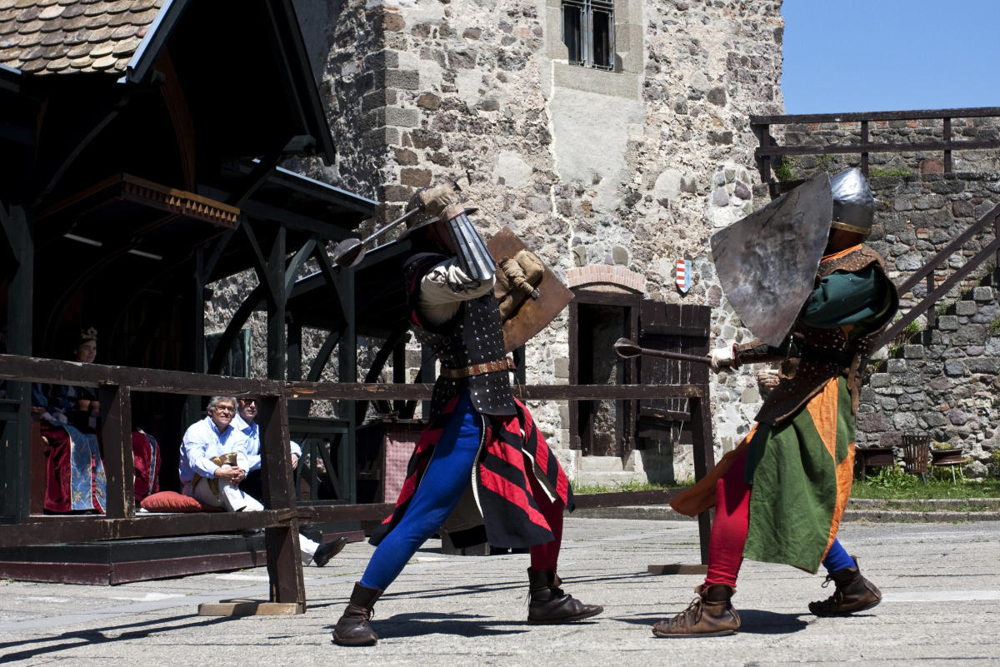

Backdroped with scrolling
Mai események
- 11:00 – Várvezetés
- 13:00 – Lovagi bemutató
- 15:00 – Kézműves foglalkozás

A nemesvámosi vár ma is őrzi a középkor hangulatát.
A nemesvámosi vár ma is áll, és fontos szerepet tölt be a környék életében. A vár erős kőfalai és tornyai egyszerre idézik fel a múlt hangulatát, miközben a hely a jelenben is élő és látogatott. A vár nemcsak történelmi emlék, hanem közösségi tér is, ahol a látogatók megismerik a vár mindennapjait és hangulatát. A nemesvámosi vár nyitva áll az érdeklődők előtt, és célja, hogy bemutassa a középkori életet, valamint élményt nyújtson minden korosztály számára. A vár ma a hagyomány és a modern bemutatás találkozási pontja.

A nemesvámosi vár ma is őrzi a középkor hangulatát.